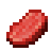
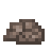

堆肥
施肥
堆肥桶可以用来制作堆肥。手持堆肥对准耕地或农作物按右键就能使用。出现粒子效果就说明生效了。


堆肥桶是制造堆肥的基础工具，它需要一定量的绿色和棕色物品，不同物品贡献的堆肥进度不同。要向堆肥桶中加入物品，按右键即可。
物品: #tfc:compost_greens_low
有些绿色物品对堆肥进度贡献较小，例如草和类似的植物。要满足堆肥桶对绿色物品的需求，你需要 16 个这类物品。

Compost Greens
有些绿色物品对堆肥桶贡献中等，例如谷物。要满足堆肥桶对绿色物品的需求，你需要 8 个这类物品。

Rich Compost Greens
有些绿色物品对堆肥桶贡献很大，例如水果和蔬菜。要满足堆肥桶对绿色物品的需求，你需要 4 个这类物品。

Poor Compost Browns
有些棕色物品对堆肥桶贡献较小，例如干芦苇、蕨类、藤蔓、以及落叶。要满足堆肥桶对棕色物品的需求，你需要 16 个这类物品。

Compost Browns
有些棕色物品对堆肥桶贡献中等，例如草木灰和黄麻。要满足堆肥桶对棕色物品的需求，你需要 8 个这类物品。

Rich Compost Browns
有些棕色物品对堆肥桶贡献很大，例如西瓜、南瓜、枯萎的灌木、松果、以及浮木。要满足堆肥桶对棕色物品的需求，你需要 4 个这类物品。

Compost Poisons
有些物品会污染你的堆肥桶。比如肉和骨头。用腐烂的堆肥施肥会立刻使农作物死亡。
堆肥桶的转换效率一定程度上会受其所处环境影响。在堆肥桶顶上放一个雪方块会令其效率稍微提升，而在降雨量小于 150mm 或大于 350mm 的地区，堆肥桶的转换效率会大幅降低。同时，如果堆肥桶紧邻着其他堆肥桶，它的转换效率也会变差。

堆肥
堆肥是堆肥桶的产物。
- 氮：40
- 磷：20
- 钾：40

骨粉
骨粉是由骨头制成的。
- 磷：10

硝石粉
硝石粉是由它的矿石制成的。
- 氮：10
- 钾：40

鸟粪石
鸟粪石存在于地下深处和砾石海岸。
- 氮：80
- 磷：50
- 钾：10

草木灰
挖掉篝火可以获得草木灰。
- 磷：10
- 钾：30

钾石盐粉
钾石盐粉是由它的对应矿石磨成的。
- 钾：50